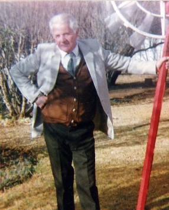

Jacob Johannes Smit (*1930, †1996)
Voorgeslagte
|
Nageslagte
|
Foto(s)
Genealogiese no.
Voorname
Jacob Johannes
Van
Smit
Geslag
Manlik
Vader
Moeder
# ste kind van vader
0
Noemnaam
Japie
Geboortedatum
1930-10-27
Geboorteplek
Doopdatum
Doopplek
Sterfdatum
1996-10-30
Sterfplek
Kieserville, Lichtenburg
Huwelike
No.
Naam
Datum
Plek
Nota
1
Jacoba Danielina Henning
1954-6-6
Rustenburg
sterf 2011
Kinders
No.
Naam
Geslag
Ander ouer
Geboortedatum
Sterfdatum
1
Jacob Johannes Smit
Manlik
Jacoba Danielina Henning
1954-10-27
2
Willem Frederik Smit
Manlik
Jacoba Danielina Henning
1956-2-23
3
Christoffel Cornelius Smit
Manlik
Jacoba Danielina Henning
1958-4-26
4
Frederick Hendrik Smit
Manlik
Jacoba Danielina Henning
1959-9-1
1962-12-16
5
Alwyn Smit
Manlik
Jacoba Danielina Henning
1961-10-11
6
Jacobus Johannes Smit
Manlik
Jacoba Danielina Henning
1963-11-24
7
Jan Lourens Smit
Manlik
Jacoba Danielina Henning
1964-9-6
1981-1-25
8
Lourens Henning Smit
Manlik
Jacoba Danielina Henning
1966-11-24
1992-11-16
9
Jacoba Johanna Susanna Smit
Vroulik
Jacoba Danielina Henning
1968-3-19
10
Anna Petronella Catharina Smit
Vroulik
Jacoba Danielina Henning
1970-9-23
11
Frederika Willemiena Smit
Vroulik
Jacoba Danielina Henning
1972-8-19
12
Willem Frederik Adriaan Smit
Manlik
Jacoba Danielina Henning
1974-1-18
Nageslagte van Jacob Johannes Smit (*1930, †1996)
Jacob Johannes Smit (*1930, †1996)
Jacob Johannes Smit (*1954)
Isabella Petronella Aletta Smit (*1976)
Jacob Johannes Smit (*1977, †1977)
Bianca Hendrina Magdalene Smit (*1985)
Willem Frederik Smit (*1956)
Susarah Johanna Smit (*1979)
Jacoba Daliena Smit (*1982)
Maria Elizabeth Smit (*1984)
Susanna Elizabeth Gertruida Alexandra Smit (*1985)
Rosina Wilemiena Fredricka Smit (*1989)
Christoffel Cornelius Smit (*1958)
Jacoba Daliena Smit (*1979)
Christina Cornelia Smit (*1980)
Frederick Hendrik Smit (*1959, †1962)
Alwyn Smit (*1961)
Ronnie Levendal Smit (*1985)
Neika Smit (*1986, †1988)
Barend Cornelius Smit (*1992)
Jacobus Johannes Smit (*1963)
Jacobus Johannes Smit (*1984)
Sarel Johannes Smit (*1989)
Catharina Edrika Smit (*1994)
Jan Lourens Smit (*1964, †1981)
Lourens Henning Smit (*1966, †1992)
Sonja Smit (*1990)
Jacoba Johanna Susanna Smit (*1968)
Cindy Lottering (*1986)
Leonie Petronella Jacoba Lottering (*1989)
Francois Petrus Willem Lottering (*1999)
Anna Petronella Catharina Smit (*1970)
Jacolien Fredrika Cornelia Kraft (*1994)
Josef Frans Frederick Kraft (*1998)
Frederika Willemiena Smit (*1972)
Alwyn Philippus Deon Lottering (*1990)
Nicolene Lucya Lottering (*1993)
Jacoba Yolanda Lottering (*1997)
Willem Frederik Adriaan Smit (*1974)
Johannes Jurgens Smit (*1997, †1997)
Adri Smit (*1999)
Fotos

Jacob Johannes Smit *27-10-1930, man van b6.c4.d1.e5.f4.g14. Jacoba Maria Smit (gebore Henning) *7-4-1938
Beskou lys van mense op foto
Jacob Johannes Smit